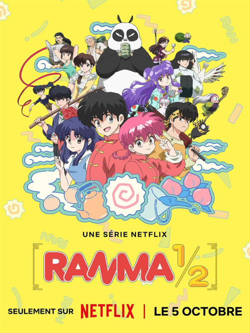

Nova temporada de Ranma 1/2 disponível!

As notícias mais recentes sobre Ranma 1/2 se concentram na segunda temporada do remake produzido pelo estúdio Mappa, que estreou na Netflix em 4 de outubro de 2025. Remake do anime (Netflix)
A primeira temporada do remake estreou em outubro de 2024. Em dezembro de 2024, foi anunciada a produção da segunda temporada, após o sucesso da primeira.
A segunda temporada foi lançada na Netflix em 4 de outubro de 2025. Foram divulgados novos trailers, incluindo a versão dublada e um com a música de abertura e encerramento. Mangá
Em agosto de 2025, foi anunciado que a Editora JBC relançaria o mangá de Ranma 1/2 no formato wideban no Brasil, após uma enquete com os fãs. A reimpressão conta com arquivos remasterizados e uma qualidade de imagem superior à da publicação anterior. Mais informações
A produção do novo anime é do estúdio Mappa, responsável por outras animações de sucesso.
Além do relançamento do mangá, o sucesso do remake na Netflix despertou o interesse de fãs antigos e novos na obra de Rumiko Takahashi.